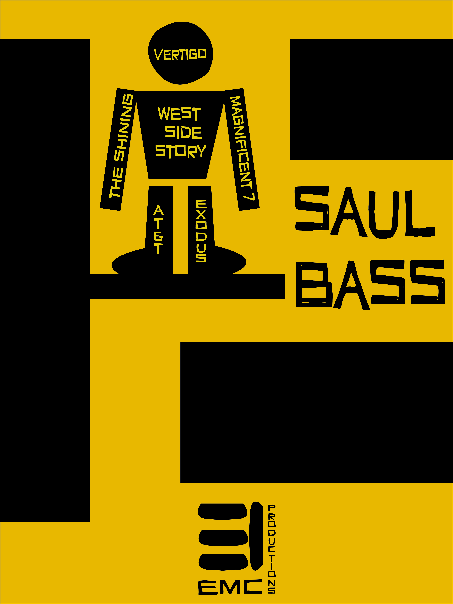

ETHAN CAPPS
Aspiring Graphic Designer
My name is Ethan Capps, and I am a graphic designer currently taking classes at Wake Tech Community College to pursue a career in that field. In the past, I was a Game Master at Ready Set Escape, and I am the creative consultant of Johnston Now Magazine. I've always been a very creative person with an active imagination. Drawing and designing have always been enjoyable, therapeutic activities for me, and pursuing a career in graphic design is one of the best decisions I've ever made. I'm happy that I now know how to use Photoshop, InDesign, and Illustrator, and I cannot wait to put those skills to good use. I primarily design posters, flyers, ads, packaging, and billboards, and once I am recruited and have a really good graphic design job, I guarantee that I will be able to make my clients happy. I'm a very cooperative and easy-going person with solid communication skills.
My Design Portfolio
It's not great, and it's very much a work in progress, but still, if you're interested, check out my online portfolio here.
Example of My Work: Designer Tribute Poster
This is a poster paying homage to one of my favorite designers, Saul Bass. He is most known for his movie poster designs, especially for Alfred Hitchcock films such as Vertigo, and he also designed variants of the AT&T and Quaker Oats logos. He is most known for his minimalist designs contain silhouettes, geometric shapes, and warm colors. I think this poster captures the spirit of his work very well, and is probably my favorite piece I've ever made.
Work Experience
I am the Creative Consultant of Johnston Now Magazine, and I used to be a part-time Game Master at Ready Set Escape in Smithfield, NC.
Education
South Johnston High School - Four Oaks, NC / Wake Tech Community College - Raleigh, NC
I attended Wake Tech from 2020 to 2022 and graduated with an Associate's Degree in Advertising & Graphic Design. I graduated from South Johnston High School and received my diploma in 2020.